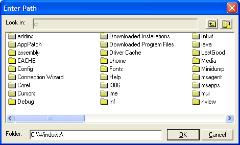

UI_GET_PATH()
Syntax
Path as C = UI_GET_PATH( Title as C, Drives as C, Starting_Folder as C )
Argument | Description |
Path | The selected directory. The directory must exist. If the Starting_Folder does not exist, the first subfolder that does exist will be returned. |
Title | The title of the dialog box. |
Drives | The drive portion of the path to display. You can specify multiple drives separated by semicolons ("C:\;D:\"). Do not add spaces between drives. |
Starting_Folder | The directory portion of the path to display. Note : The default directory must have a trailing backslash. |
Description
UI_GET_PATH() displays a dialog box that allows the user to select a folder (i.e. sub-directory). The dialog displays all of the folders on Drive, starting in the Starting_Folder.

 Note : The Starting_Folder directory must exist. If you use the final "\" character after a path, either escape it with a second "\" character or add a final space " " character.
Note : The Starting_Folder directory must exist. If you use the final "\" character after a path, either escape it with a second "\" character or add a final space " " character.
This function cannot be used to select the root folder of a drive. To do that, use the ui_browse_for_folder Function.
In addition, the ui_get_path function is written in Xbasic and is not a 'standard' way of prompting for a folder. The ui_browse_for_folder Function wraps the standard windows control for prompting for a folder name, and so this control might be more familiar to users. The ui_get_path() function allows the user to create new folders, whereas ui_browse_for_folder() does not. If you do not need the option to create new folders, prefer the ui_browse_for_folder Function.
Limitations
Desktop applications only.
Example
Display the dialog shown in the above diagram.
path = UI_GET_PATH ("Enter Path","c\: ", "c:\windows\\") ui_get_path("Folder Name", "C:\;D:\ ", "C:\documents\ ") |
See Also
User Interaction Functions, Directory Functions, ui_browse_for_folder Function